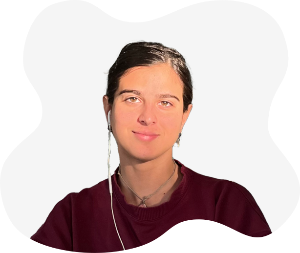

PORTFOLIO DIGITAL
AGUSTINA BENITEZ CRUZ

Soy estudiante de diseño digital en la Universidad de Palermo. Manejo las redes de mi emprendimiento de buzos de Fórmula 1, Bakú. También tengo un emprendimiento de diseño sonoro llamado LA Sound Design.